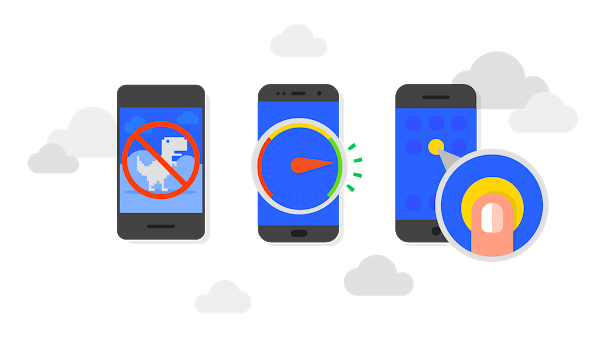
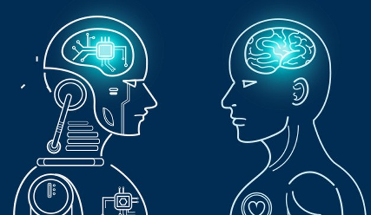
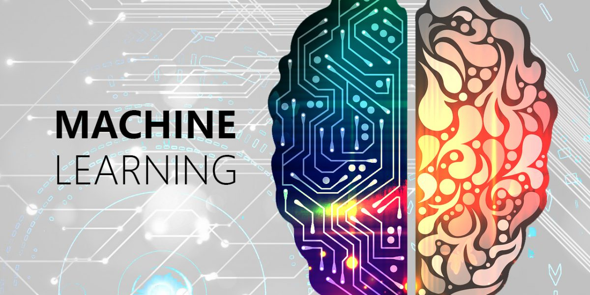
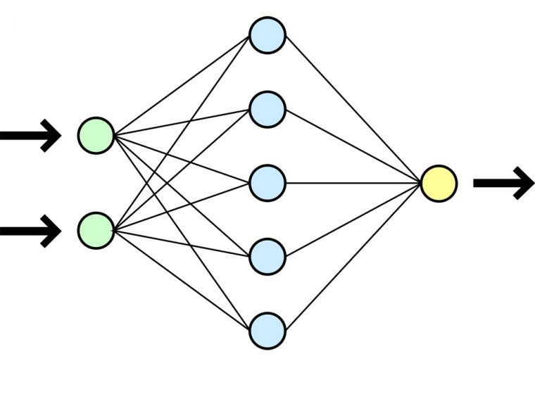
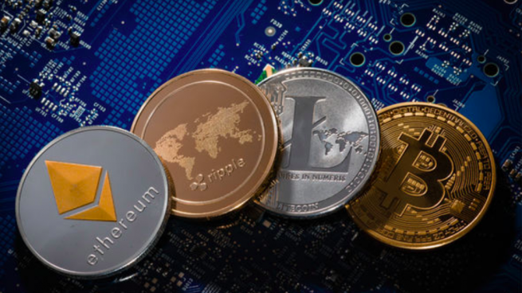
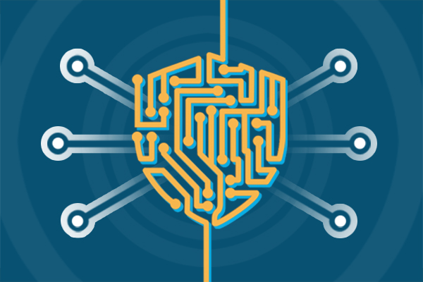
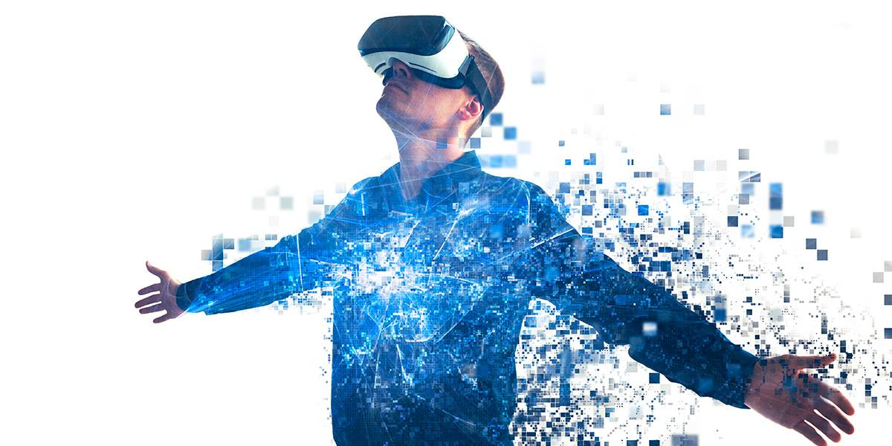
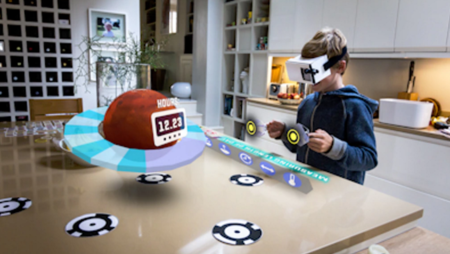
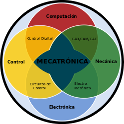
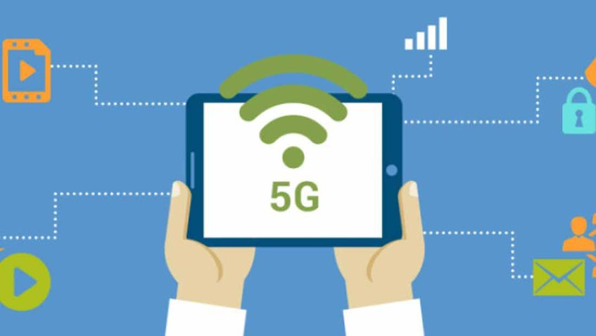

Seminario de Tecnologia

Html5 es un lenguaje markup (de hecho, las siglas de HTML significan Hyper Text Markup Language) usado para estructurar y presentar el contenido para la web. Volviendo a qué es html5. Se trata de un sistema para formatear el layout de nuestras páginas, así como hacer algunos ajustes a su aspecto.
Html5 es el sucesor del html4.01 y es el último lenguaje de marcado de hipertexto para los sitios web desarrollados por world wide web consortium (w3c) y grupo web de hipertexto aplicación de tecnología de trabajo (whatwg).
Es un lenguaje muy simple y general que sirve para definir otros lenguajes que tienen que ver con el formato de los documentos. El texto en él se crea a partir de etiquetas, también llamadas tags, que permiten interconectar diversos conceptos y formatos.
Gracias a HTML5, los usuarios pueden acceder a sitios web de manera offline, sin estar conectados a internet. Se suma también la funcionalidad de drag and drop, y también la edición online de documentos ampliamente popularizada por Google Docs.
Links relacionados al tema:
1-Entendiendo HTML5: guía para principiantes
2-Algunas Características de HTML5 que usted debe saber
3-Definición de html - Qué es, Significado y Concepto
4-Definición, usos y ventajas del lenguaje HTML5
Links relacionados al tema videos:
3-¿Qué es y para que se utiliza HTML 5?
4-Tutorial básico de HTML desde cero

Css es un lenguaje para definir el estilo o la apariencia de las páginas web, escritas con html o de los documentos xml. css se creó para separar el contenido de la forma, a la vez que permite a los diseñadores mantener un control mucho más preciso sobre la apariencia de las páginas.
La a primera versión de css fue publicada a fines del año 1996 y fue logrando popularidad y aceptación hasta llegar a la versión 2.1, estándar actual que ofrece gran compatibilidad con la mayoría de los navegadores del mercado.
El css sirve para definir la estética de un sitio web en un documento externo y eso mismo permite que modificando ese documento (la hoja css) podamos cambiar la estética entera de un sitio web, el mismo sitio web puede variar totalmente de estética cambiando solo la css, sin tocar para nada los documentos html o jsp o asp que lo componen.
Css3 contiene casi todo lo que está incluido en css2.1, la versión anterior de la especificación. También añade nuevas características para ayudar a los desarrolladores a resolver una serie de problemas relacionados con la presentación sin recurrir a complementos de secuencias de comandos o imágenes adicionales.
Links relacionados al tema:
1-¿Que es y para que sirve CSS3?
Links relacionados al tema videos:
3-Como animar elementos html - Animaciones con CSS
3-Curso de CSS3 - 10 - Animaciones con css3

Javascript es un lenguaje de programación que te permite crear contenido nuevo y dinámico, controlar archivos de multimedia, crear imagenes animadas y muchas otras cosas más. (aunque, no todo, pero es increíble lo que puedes llegar a hacer con tan solo unas pocas líneas de código de javascript).
El javascript es una tecnología que ha sobrevivido por más de 10 años, es fundamentales en la web, junto con la estandarización de la “european computer manufacturers association” (ecma) (adoptada luego por la iso) y w3c dom, javascript es considerado por muchos desarrolladores web como la fundación para la próxima generación de aplicaciones web dinámicas del lado del cliente.
Pero debemos saber que el javascript es un lenguaje muy diferente del java. el javascript aunque es un lenguaje de programación orientado a objetos no tiene herencia, al contrario del java que si la tiene, sino que el javascript es más bien un lenguaje orientado a eventos.
Dónde puedo ver funcionando Java Script? : Correo, Chat, Buscadores de información, Reloj, Contadores de visitas, Fechas, Contadores de visitas,Fechas, Calculadoras, Validadores de formularios, Detectores de navegadores e idiomas.
Links relacionados al tema:
3-JavaScript en el lado servidor
4-Lenguaje De Programación Javascript
Links relacionados al tema videos:
1-¿Qué es JavaScript? Bien Explicado
2-¿Por qué aprender Javascript?
3-La mejor forma aprender y actualizarte en JavaScript
4-¿Qué es javascript y cuál es su funcionalidad?
Progressive web apps (o aplicaciones web progresivas), es un término que se da a una nueva generación de aplicaciones que incrementan su funcionalidad, conforme las capacidades del dispositivo en el que se ejecutan, incrementan, de ahí la palabra progresiva. la siguiente parte del nombre web, hace referencia a que se construyen utilizando estándares de desarrollo web, algunos ya conocidos como html, css y javascript; y una nueva generación de apis de javascript. la parte final app es porque las progressive web apps se comportan como aplicaciones web nativas, pero usan tecnologías web.
En términos muy simplistas, son páginas web que se comportan como aplicaciones nativas. Es una oración muy simple, pero también muy profunda. Las apps nativas (ios, android por ejemplo), históricamente han tenido una serie de ventajas sobre las páginas web, ¿como cuáles? Almacenamiento local, ejecutarse offline, notificaciones push, performance, acceso a hardware, acceso al homescreen del dispositivo, entre otros.
Apps híbridas casi inmediatamente después, el proyecto cordova trajo más vida al desarrollo web, a partir de cordova nacieron phonegap y ionic, dos frameworks para desarrollo de "apps nativas", utilizando estándares web, ¿el problema? El problema es que las, nuevas, aplicaciones híbridas, no terminaban de cerrar la brecha.
¿Qué es una aplicación nativa? En términos generales es una aplicación que ha sido específicamente desarrollada para el sistema operativo en el que corre, a diferencia de una aplicación web que funciona en distintos sistemas operativos como Windows, Mac o sistemas de móviles, una aplicación nativa ha sido desarrollada específicamente para un sistema operativo y, presumiblemente, respeta mejor el aspecto y funcionamiento en dicha plataforma, además de funcionar más fluida.
Links relacionados al tema:
1-¿Que son las Progressive Web Apps?
2-Todo lo que debes saber sobre las PWA
3-¿Qué son las Aplicaciones Web Progresivas o "Progressive Web Apps"?
4-Las Progressive Web Apps: Todo lo que se tiene que saber
Links relacionados al tema videos:
1-PWA | Progressive Web Apps, Introducción a las Aplicaciones Web Progresivas
2-Web Apps | Qué son y cómo hacer una fácilmente
3-WEB APP PROGRESIVA (la web del FUTURO) ✔
4-*DEMO* Vídeo final del curso de aplicaciones web progresivas
La inteligencia artificial (Artificial Intelligence, o AI) es la simulación de procesos de inteligencia humana por parte de máquinas, especialmente sistemas informáticos. Estos procesos incluyen el aprendizaje (la adquisición de información y reglas para el uso de la información), el razonamiento (usando las reglas para llegar a conclusiones aproximadas o definitivas) y la autocorrección. Las aplicaciones particulares de la AI incluyen sistemas expertos, reconocimiento de voz y visión artificial.
Tipos de inteligencia artificial:
Máquinas reactivas. Un ejemplo es Deep Blue, el programa de ajedrez de IBM que venció a Garry Kasparov en los años noventa. Deep Blue puede identificar piezas en el tablero de ajedrez y hacer predicciones, pero no tiene memoria y no puede usar experiencias pasadas para informar a las futuras. Analiza movimientos posibles –los propio y los de su oponente– y elige el movimiento más estratégico. Deep Blue y AlphaGO de Google fueron diseñados para propósitos estrechos y no pueden aplicarse fácilmente a otra situación.
Memoria limitada. Estos sistemas de AI pueden usar experiencias pasadas para informar decisiones futuras. Algunas de las funciones de toma de decisiones en vehículos autónomos han sido diseñadas de esta manera. Las observaciones son utilizadas para informar las acciones que ocurren en un futuro no tan lejano, como un coche que ha cambiado de carril. Estas observaciones no se almacenan permanentemente.
Teoría de la mente. Este es un término psicológico. Se refiere a la comprensión de que los demás tienen sus propias creencias, deseos e intenciones que afectan las decisiones que toman. Este tipo de AI aún no existe.
Autoconocimiento. En esta categoría, los sistemas de AI tienen un sentido de sí mismos, tienen conciencia. Las máquinas con conciencia de sí comprenden su estado actual y pueden usar la información para inferir lo que otros están sintiendo. Este tipo de AI aún no existe.
Links relacionados al tema:
1-Inteligencia artificial, o AI
3-Inteligencia Artificial: Qué es y Cómo funciona | Salesforce
4-Definición de Inteligencia artificial
Links relacionados al tema videos:
1-¿Qué es la inteligencia artificial?
2-Inteligencia Artificial: ¿Amiga o Enemiga?
3-Inteligencia artificial: el reto evolutivo de la humanidad
4-Inteligencia Artificial: ¿Quién toma las decisiones?
El aprendizaje automático o aprendizaje automatizado o aprendizaje de máquinas (del inglés, "Machine Learning") es el subcampo de las ciencias de la computación y una rama de la inteligencia artificial, cuyo objetivo es desarrollar técnicas que permitan que las computadoras aprendan. De forma más concreta, se trata de crear programas capaces de generalizar comportamientos a partir de una información suministrada en forma de ejemplos.
Algunos sistemas de aprendizaje automático intentan eliminar toda necesidad de intuición o conocimiento experto de los procesos de análisis de datos, mientras otros tratan de establecer un marco de colaboración entre el experto y la computadora. De todas formas, la intuición humana no puede ser reemplazada en su totalidad, ya que el diseñador del sistema ha de especificar la forma de representación de los datos y los métodos de manipulación y caracterización de los mismos. Sin embargo, las computadoras son utilizadas por todo el mundo con fines tecnológicos muy buenos.
Links relacionados al tema:
Links relacionados al tema videos:
2-Machine learning (Aprendizaje automático)
El Deep Learning lleva a cabo el proceso de Machine Learning usando una red neuronal artificial que se compone de un número de niveles jerárquicos. En el nivel inicial de la jerarquía la red aprende algo simple y luego envía esta información al siguiente nivel. El siguiente nivel toma esta información sencilla, la combina, compone una información algo un poco más compleja, y se lo pasa al tercer nivel, y así sucesivamente.
El Deep Learning ha llamado mucho la atención por su potencial utilidad en distintos tipos de aplicaciones en el “mundo real” (pueden aplicarse con éxito a grandes volúmenes de datos para el descubrimiento y aplicación de conocimiento, así como a la realización de predicciones a partir de él), principalmente debido a que obtiene tasas de éxito elevadas con entrenamiento “no supervisado”. En el caso del ejemplo, las redes de Deep Learning aprenderían a identificar gatos aunque las imágenes no tuvieran la etiqueta "gato”.
Links relacionados al tema:
1-¿Qué es el Deep Learning y para qué sirve?
Links relacionados al tema videos:
1-Introducción al Deep Learning
2-¿Qué es el Aprendizaje Supervisado y No Supervisado?

Las redes neuronales (también conocidas como sistemas conexionistas) son un modelo computacional basado en un gran conjunto de unidades neuronales simples (neuronas artificiales), de forma aproximadamente análoga al comportamiento observado en los axones de las neuronas en los cerebros biológicos.
Las redes neuronales suelen consistir en varias capas o un diseño de cubo, y la ruta de la señal atraviesa de adelante hacia atrás.
Estos sistemas aprenden y se forman a sí mismos, en lugar de ser programados de forma explícita, y sobresalen en áreas donde la detección de soluciones o características es difícil de expresar con la programación convencional.
Propagación hacia atrás es donde se utiliza la estimulación hacia adelante o en el "frente" para restablecer los pesos de las unidades neuronales y esto a veces se realiza en combinación con una formación en la que se conoce el resultado correcto.
Links relacionados al tema:
2-Modelo de Neurona Artificial
Links relacionados al tema videos:
1-Redes Neuronales: Fácil y desde cero
Una criptomoneda, criptodivisa (del inglés cryptocurrency) o criptoactivo es un medio digital de intercambio. La primera criptomoneda que empezó a operar fue el bitcoin en 2009 y, desde entonces, han aparecido muchas otras con diferentes características y protocolos como Litecoin, Ethereum, Ripple, Dogecoin.
En los sistemas de criptomonedas, se garantiza la seguridad, integridad y equilibrio de sus estados de cuentas (contabilidad) por medio de un entramado de agentes (transferencia de archivo segmentada o transferencia de archivo multifuente) que se verifican (desconfían) mutuamente llamados mineros, que son, en su mayoría, público en general y protegen activamente la red (el entramado) al mantener una alta tasa de procesamiento de algoritmos, con la finalidad de tener la oportunidad de recibir una pequeña propina, que se reparte de manera aleatoria.
Romper la seguridad existente en una criptomoneda es matemáticamente posible, pero el costo para lograrlo sería inasumiblemente alto.
Los diferentes tipos de criptomoneda son: Bitcoin, Ethereum, Litecoin, Ripple, Dogecoin, Dash, Monero, Petro.
Links relacionados al tema:
3-Cuáles son las principales criptomonedas y cuánto valen.
4-¿Cuántos tipos de monedas virtuales existen?
Links relacionados al tema videos:
1-¿Cómo funcionan las criptomonedas? (Como Bitcoin)
3-INVERTIR EN CRIPTOMONEDAS [De forma rentable]
4-3 cosas que no te dicen sobre las criptomonedas

Cadena de bloques. Formación de una cadena de bloques. La cadena mayor (negra) consta de la serie de bloques más larga del bloque de génesis (verde) al bloque actual. Los bloques huérfanos (púrpura) existen fuera de la cadena mayor.
Una cadena de bloques o cadena articulada [cita requerida], conocida en inglés como blockchain, es una estructura de datos en la que la información contenida se agrupa en conjuntos (bloques) a los que se les añade meta informaciones relativas a otro bloque de la cadena anterior en una línea temporal, de manera que gracias a técnicas criptográficas, la información contenida en un bloque sólo puede ser repudiada o editada modificando todos los bloques posteriores.
Esta propiedad permite su aplicación en entorno distribuido de manera que la estructura de datos blockchain puede ejercer de base de datos pública no relacional que contenga un histórico irrefutable de información.
El concepto de cadena de bloque fue aplicado por primera vez en 2009 como parte de Bitcoin. Los datos almacenados en la cadena de bloques normalmente suelen ser transacciones (p. ej. financieras) por eso es frecuente llamar a los datos transacciones. Sin embargo, no es necesario que lo sean. Realmente podríamos considerar que lo que se registran son cambios atómicos del estado del sistema. Por ejemplo una cadena de bloques puede ser usada para estampillar documentos y asegurarlos frente a alteraciones.
Links relacionados al tema:
1-Qué es blockchain: la explicación definitiva para la tecnología más de moda
2-Qué es el blockchain y cómo funciona
3-Cuáles son las principales criptomonedas y cuánto valen.
4-QUÉ ES BLOCKCHAIN, LA TECNOLOGÍA QUE VIENE A REVOLUCIONAR LAS FINANZAS?
Links relacionados al tema videos:
3-¿Qué es blockchain? Seguridad y usos de una tecnología disruptiva
4-Qué es el Blockchain y por qué puede cambiar el mundo
La ciberseguridad es la práctica de defender las computadoras y los servidores, los dispositivos móviles, los sistemas electrónicos, las redes y los datos de ataques maliciosos. También se conoce como seguridad de tecnología de la información o seguridad de la información electrónica. El término es amplio y se aplica a numerosos elementos, desde seguridad informática hasta recuperación ante desastres y educación del usuario final.
El gobierno de Estados Unidos invierte USD 13 000 millones al año en ciberseguridad, pero advierte que los ciberataques siguen evolucionando con gran rapidez. Para contrarrestar la proliferación de código malicioso y ayudar en la detección temprana, el Instituto Nacional de Estándares y Tecnología (NIST) recomienda el monitoreo continuo y en tiempo real de todos los recursos electrónicos
Por tanto, ¿de qué manera protegen las medidas de ciberseguridad a los usuarios y los sistemas? En primer lugar, la ciberseguridad depende de los protocolos criptográficos utilizados para cifrar los correos electrónicos, archivos y otros datos críticos. La ciberseguridad no solo protege la información que se transmite, sino que también ofrece protección contra la pérdida o el robo. Además, el software de seguridad del usuario final analiza las computadoras para detectar código malicioso, pone en cuarentena este código y lo elimina del equipo. En casos más graves (como una infección del sector de arranque), estos sistemas son capaces de borrar por completo una computadora.
Gracias a que posibilitan la ejecución de los programas posiblemente maliciosos en una burbuja virtual separada de la red del usuario, las soluciones de seguridad pueden analizar cualquier acción realizada y recopilar información del comportamiento del código malicioso. La ciberseguridad es una disciplina en evolución que se concentra en ofrecer la mejor protección a sistemas electrónicos frente al panorama cambiante de amenazas, la ciberseguridad es una disciplina en evolución que se concentra en ofrecer la mejor protección a sistemas electrónicos frente al panorama cambiante de amenazas.
Links relacionados al tema:
1-¿Ciberseguridad o seguridad de la información? Aclarando la diferencia
4-¿Sabes qué es la ciberseguridad y para qué sirve?
Links relacionados al tema videos:
1-Introducción a la ciberseguridad
2-Diferencias entre ciberseguridad IT & OT (URJCx)
3-¿Cómo funciona la ciberseguridad?
4-Dialogando sobre ciberseguridad
La realidad virtual es un entorno de escenas u objetos de apariencia real. La acepción más común refiere a un entorno generado mediante tecnología informática, que crea en el usuario la sensación de estar inmerso en él. Dicho entorno es contemplado por el usuario a través de un dispositivo conocido como gafas o casco de realidad virtual.
La simulación que hace la realidad virtual se puede referir a escenas virtuales, creando un mundo virtual que sólo existe en el ordenador de lugares u objetos que existen en la realidad. También permite capturar la voluntad implícita del usuario en sus movimientos naturales proyectándolos en el mundo virtual que estamos generando, proyectando en el mundo virtual movimientos reales.
Un mundo virtual , es un tipo de comunidad virtual en línea que simula un mundo o entorno artificial inspirado o no en la realidad, en el cual los usuarios pueden interactuar entre sí a través de personajes o avatares, y usar objetos o bienes virtuales.
Las aplicaciones que en la actualidad encontramos de la realidad virtual a actividades de la vida cotidiana son muchas y diversas. Hay que destacar: la reconstrucción de la herencia cultural, la medicina, la simulación de multitudes y la sensación de presencia.
Links relacionados al tema:
3-¿Qué es la realidad virtual? - Historia
4-¿Sabes qué es la ciberseguridad y para qué sirve?
Links relacionados al tema videos:
1-Introducción a la ciberseguridad
2-Diferencias entre ciberseguridad IT & OT (URJCx)
3-¿Cómo funciona la ciberseguridad?
La realidad aumentada es una tecnología que complementa el mundo real con el mundo digital. Superpone imágenes generadas por ordenadores, smartphones, tabletas o visores especiales a lo que sucede en tiempo real, de modo que el usuario tenga una mejor percepción de la realidad.
La realidad aumentada no solo ofrece formas divertidas e interactivas para que el usuario común y corriente aprenda, experimente e imagine cosas nuevas, sino que también tiene aplicación en numerosos campos, como se verá a continuación.
La realidad aumentada es diferente de la realidad virtual: sobre la realidad material del mundo físico monta una realidad visual generada por la tecnología, en la que el usuario percibe una mezcla de las dos realidades; en cambio, en la realidad virtual el usuario se aísla de la realidad material del mundo físico para sumergirse en un escenario o entorno totalmente virtual.
La Realidad Aumentada (RA) es una tecnología que permite superponer elementos virtuales sobre nuestra visión de la realidad. Cada vez más demandada, en 2020 se convertirá en un negocio que roce los 120.000 millones de dólares a nivel mundial.
Links relacionados al tema:
2-Qué es la realidad aumentada, cómo se diferencia de la virtual
3-¿Qué es la realidad virtual? - Historia
4-Qué es y cómo funciona la realidad aumentada
Links relacionados al tema videos:
2-Realidad Aumentada: ¿Cómo funciona? y Usos
3-Apps con Realidad Aumentada para tu smartphone
4-Realidad Virtual y Realidad Aumentada
La realidad mixta (RM), también llamada a veces realidad híbrida, es la combinación de realidad virtual y realidad aumentada. Esta combinación permite crear nuevos espacios en los que interactúan tanto objetos y/o personas reales como virtuales. Es decir, se puede considerar como una mezcla entre la realidad, realidad aumentada, virtualidad aumentada y realidad virtual.
El término realidad mixta no debe confundirse con el de realidad aumentada o RA. La realidad aumentada genera los estímulos a tiempo real para la interacción del usuario, los cuales se superponen sobre el entorno físico de este, mientras que la realidad mixta no sólo permite la interacción del usuario con el entorno virtual sino que también permite que objetos físicos del entorno inmediato del usuario sirvan como elementos de interacción con el entorno virtual.
La realidad mixta permite la incorporación de objetos gráficos generados por ordenador en una escena tridimensional del mundo real o bien la incorporación de objetos reales en un mundo virtual.En 1994 Paul Milgram y Fumio Kishino definieron el concepto de realidad mixta como cualquier espacio entre los extremos del continuo de la virtualidad. Este continuo de la virtualidad se extiende desde el mundo completamente real hasta el entorno completamente virtual, encontrándose entre medio de estos la realidad aumentada y realidad virtual.
Como ya se ha dicho, la realidad mixta permite la incorporación de objetos gráficos generados por ordenador en una escena tridimensional del mundo real o bien la incorporación de objetos reales en un mundo virtual.
Links relacionados al tema:
2-Realidad mixta – ¿Qué es y qué oportunidades nos ofrecerá?
3-Realidad mixta, ¿el futuro de la tecnología inmersiva?
4-Diferencias entre realidad mixta y aumentada
Links relacionados al tema videos:
2-Documental móvil con realidad mixta
3-Nuestras aplicaciones de Realidad Mixta
4-Windows Mixed Reality - Realidad Mixta
El Internet de las Cosas es un concepto que cada vez toma más relevancia, pero aún no termina de cuajar en los hogares. Descubre exactamente de qué se trata.Internet de las cosas, Internet of Things o IoT por sus siglas en ingles, es un concepto un poco abstracto pero que ha estado ganando bastante popularidad en los últimos meses. La idea que intenta representar queda bastante bien ilustrada por su nombre, cosas cotidianas que se conectan al Internet, pero en realidad se trata de mucho más que eso.
El concepto de Internet de las cosas fue propuesto por Kevin Ashton en el Auto-ID Center del MIT en 1999, donde se realizaban investigaciones en el campo de la identificación por radiofrecuencia en red (RFID) y tecnologías de sensores. Es un término del que escuchamos hablar constantemente.
Alternativamente, Internet de las cosas es la conexión de Internet con más cosas u objetos que con personas. También, se suele conocer como Internet de todas las cosas o Internet en las cosas. Si los objetos de la vida cotidiana tuvieran incorporadas etiquetas de radio, podrían ser identificados y gestionados por otros equipos, de la misma manera que si lo fuesen por seres humanos.
El Internet de las cosas potencia objetos que antiguamente se conectaban mediante circuito cerrado, como comunicadores, cámaras, sensores, y demás, y les permite comunicarse globalmente mediante el uso de la red de redes.
Links relacionados al tema:
¿QUÉ ES IOT (EL INTERNET DE LAS COSAS)?
3-Realidad mixta, ¿el futuro de la tecnología inmersiva?
Links relacionados al tema videos:
1-El Internet de las cosas | ¿Qué es y cómo funciona?
2-EL INTERNET DE LAS COSAS (Documental)
3-El internet de las cosas y Big Data
4-Ejemplo de hasta donde llegará el Internet de las cosas
Un consenso común es describir a la mecatrónica como una disciplina integradora de las áreas de mecánica, electrónica e informática cuyo objetivo es proporcionar mejores productos, procesos y sistemas industriales. La mecatrónica no es, por tanto, una nueva rama de la ingeniería, sino un concepto recientemente desarrollado que enfatiza la necesidad de integración y de una interacción intensiva entre diferentes áreas de la ingeniería.
Con base en lo anterior, se puede hacer referencia a la definición propuesta por J. A. Rietdijk: "Mecatrónica es la combinación sinérgica de la ingeniería mecánica de precisión, de la electrónica, del control automático y de los sistemas para el diseño de productos y procesos", la cual busca crear maquinaria más compleja para facilitar las actividades del ser humano a través de procesos electrónicos en la industria mecánica principalmente. Existen, claro está, otras versiones de esta definición, pero ésta claramente enfatiza que la mecatrónica está dirigida a las aplicaciones y al diseño.
La mecatrónica nace para suplir tres urgentes necesidades latentes; la primera, encaminada a automatizar la maquinaría y así lograr procesos productivos ágiles y confiables; la segunda crear productos inteligentes, que respondan a las necesidades del mundo moderno; y la tercera, por cierto muy importante, armonizar entre los componentes mecánicos y electrónicos de las máquinas, ya que en muchas ocasiones, era casi imposible lograr que tanto mecánica como electrónica manejaran los mismos términos y procesos para hacer o reparar equipos.
Un ingeniero en mecatrónica es un profesional con amplio conocimiento teórico, práctico y multidisciplinario capaz de integrar y desarrollar sistemas automatizados y/o autónomos que involucren tecnologías de varios campos de la ingeniería. Este especialista entiende sobre el funcionamiento de los componentes mecánicos, eléctricos, electrónicos y computacionales de los procesos industriales, y tiene como referencia el desarrollo sostenible.
Links relacionados al tema:
2-Mecatrónica Qué es Mecatrónica y sus Aplicaciones
3-MECATRÓNICA TODO SOBRE LA INGENIERÍA MECATRÓNICA
4-¿Interesado en estudiar ingeniería mecatrónica?
Links relacionados al tema videos:
1-Introducción a la Mecatrónica
4-Mecatrónica al servicio de la sociedad
Es cualquiera de varios procesos en los que el material se une o solidifica bajo el control de la computadora para crear un objeto tridimensional, con material que se agrega (como moléculas líquidas o granos de polvo fusionados). La impresión 3D se utiliza tanto en prototipos rápidos como en fabricación aditiva (AM).
Los objetos pueden ser de casi cualquier forma o geometría y generalmente se producen utilizando datos de modelos digitales de un modelo 3D u otra fuente de datos electrónicos, como un archivo de Archivo de Fabricación Aditiva (AMF) (generalmente en capas secuenciales). Hay muchas tecnologías diferentes , como la estereolitografía(SLA) o modelado de depósitos fusionados (FDM).
Por lo tanto, a diferencia del material eliminado de un stock en el proceso de mecanizado convencional, la impresión 3D o AM crea un objeto tridimensional a partir de un modelo de diseño asistido por computadora (CAD) o archivo AMF, generalmente añadiendo sucesivamente material capa por capa.
El término "impresión 3D" originalmente se refería a un proceso que deposita un material aglutinante sobre un lecho de polvo con cabezales de impresora de inyección de tinta capa por capa. Más recientemente, el término se está utilizando en la lengua vernácula popular para abarcar una variedad más amplia de técnicas de fabricación aditiva. Los Estados Unidos y las normas técnicas mundiales utilizan el término oficial de fabricación aditiva en este sentido más amplio.
Links relacionados al tema:
3-Impresoras 3D ¿Qué son? ¿Cómo funcionan?
4-IImpresión 3D: llega el futuro de los sistemas de producción
Links relacionados al tema videos:
1-¿Qué es una Impresora 3D y cómo funciona?
2-Impresoras 3D: Funcionamiento, usos
3-3D Printer | How a 3D Printer Works | Printed 3D objects
4-Imprimir en 3D como un profesional #2 - "Post-Procesado" de PLA
La red inalámbrica de la próxima (5ta) generación abordará la evolución más allá del internet móvil, y alcanzará al Internet de las Cosas masivo hacia 2020.
La evolución más notable en comparación con las redes 4G y 4.5G (LTE avanzado) actuales es que, aparte del aumento en la velocidad de los datos, los nuevos casos de uso del Internet de las Cosas y de la comunicación requerirán nuevos tipos de desempeño mejorado; como la “latencia baja”, que brinda una interacción en tiempo real a los servicios que utilizan la nube, lo que resulta clave, por ejemplo, para los vehículos autónomos.
Además, el bajo consumo de energía permitirá que los objetos conectados funcionen durante meses o años sin la necesidad de la intervención humana.
A diferencia de los servicios actuales del Internet de las Cosas que sacrifican rendimiento para sacar el máximo provecho a las tecnologías inalámbricas existentes (3G, 4G, WiFi, Bluetooth, Zigbee, etc.), las redes 5G estarán diseñadas para alcanzar el nivel de rendimiento que necesita el Internet de las Cosas masivo. Esto hará posible que se perciba un mundo completamente ubicuo y conectado.
Links relacionados al tema:
2-La introducción de las redes 5G – Características y usos
3-Tecnología 5G. Características del nuevo estándar para móviles.
4-La tecnología detrás del 5G, estas son sus 5 ‘pequeñas’ mejoras
Links relacionados al tema videos:
1-Los Futuros Móviles 5G y sus Peligros
3-Red 5G - Lo bueno, lo malo y lo feo
45G, el próximo GRAN AVANCE de la Tecnología
Podemos resumir todo en algo muy sencillo, los temas propuestos aqui en mi pagina son ya tecnologias existentes,otras en desarrollo y en miras para ser realidad en un futuro no muy lejano, desde el HTML5 que nos permite diseñar una pagina web , que junto al CSS3 es el que le da estetica a nuestro sitio web, podemos ver a JavaScript como un robusto lenguaje de programacion que es usado en HTML para darle interectividad. Tambien cabe mencionar las Progressive Apps que son la combinacion de lo mejor de las aplicaciones y la web , un tema muy innovador y nuevo la tecnologia artificial que es la simulación de procesos de inteligencia humana por parte de máquinas ,las criptomonedas que poco a poco estan posicionandose como el dinero virtual dominante , el blockchain para los que no lo saben es la base tecnológica del funcionamiento del bitcoin ,la ciberseguridad o la seguridad informatica se enfoca en la protección de la infraestructura computacional y todo lo relacionado con esta.La realidad virtual nos quiere visualizar un entorno o escenas u objetos de apariencia real en un mundo artificial ,la realidad aumentada permite superponer elementos virtuales sobre nuestra visión de la realidad ,la realidad mixta es la combinación de la realidad virtual y realidad aumentada ,el IOT es un sistema de dispositivos de computación que tiene la capacidad de transferir datos a través de una red ,la Mecatrónica no es más que la fusión o combinación de varias ingenierías, las cuales son: Ingeniería Electrónica, Ingeniería Mecanica ,Ingeniería Informática, Ingeniería de Control.La impresión 3D es un grupo de tecnologías de fabricación por adición donde un objeto tridimensional es creado mediante la superposición de capas y la tecnologia 5G abordará la evolución más allá del internet móvil ,y alcanzará al Internet de las cosas masivo hacia 2020.